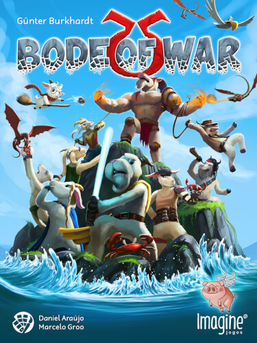
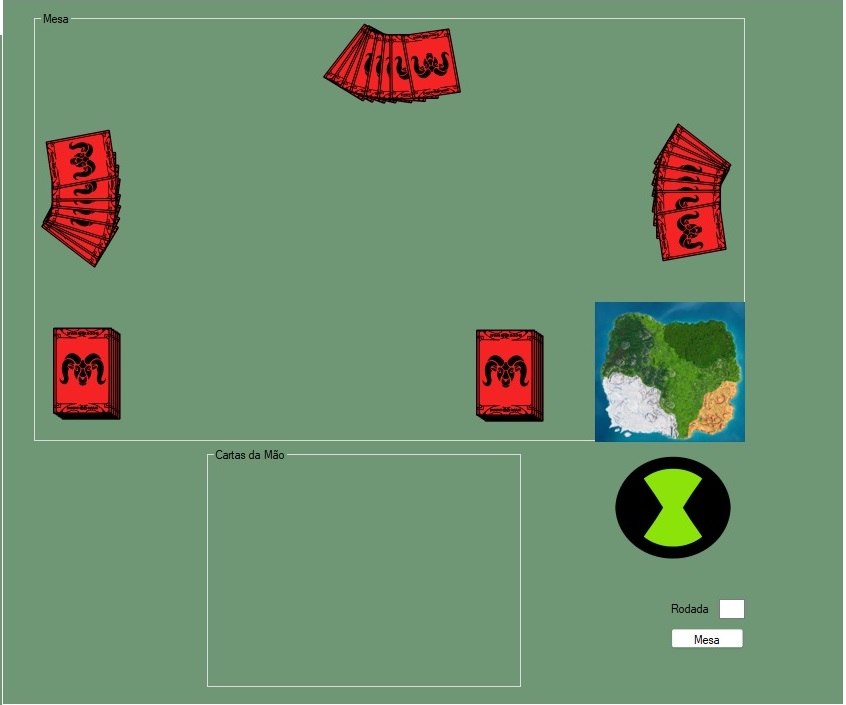

Afinal, o que é "Bode of War"?
Bode of War é um jogo de cartas com o objetivo de capturar a maior quantidade de bodes possível até o limite máximo suportada pela ilha. Para isso, os jogadores jogam cartas de bodes na mesa cada uma com um valor, e leva todas as cartas aquele que jogou a mais alta. No final da partida, quem tiver mais bodes que o limite é eliminado, e quem tiver a quantidade mais próxima ou igual ao limite vence

A nossa estratégia dentro do jogo tem como intuito sempre dificultar a vida dos outros jogadores, fazendo-os estourar.
A cada rodada "Bode" partimos sempre de uma mesma ação (listar a mesa) e com base em seu retorno executamos nossa jogada.
Se ao listar mesa tiverem cartas jogadas, fazemos uma verificação em nossa mão, procurando sempre as menores cartas que possuímos, porém seguindo uma regra de prioridade. Sendo elas:
1° Cartas Múltiplos de 10 com exceção do número 50
2° Cartas Múltiplos de 5
3° Cartas Múltiplos de 4
4° Restante das cartas
Ou seja, sempre iremos tentar jogar cartas menores que a(s) do(s) oponente(s), e que possuem mais bodes, visando dificultar a jogatina do(s) mesmo(s).
Porém, se não tivermos cartas menores que a(s) do(s) nosso(s) oponente(s), seguiremos uma ordem de prioridade contrária nas verificações e jogaremos sempre as maiores cartas de nossa mão, visando manter as menores para as rodadas seguintes.
Para os casos em que iniciamos a rodada, não teremos parâmetros de cartas para tentar jogar a menor, logo, tomaremos uma ação baseada também na ordem contrária de prioridade, porém jogando a menor carta de nossa mão. Para esse caso contamos um pouco com o fator sorte, visto que estaremos em desvantagem e nosso oponente terá a carta que jogamos como parâmetro para sua ação.
Em casos de definição de ilha, sempre definimos a menor ilha para a primeira e segunda rodada e para a terceira e quarta, verificamos se fomos nós que definimos na primeira e segunda. Caso a reposta seja sim, mantemos o padrão da menor ilha possível, caso contrário definimos o maior valor, visto que para essas premissas estamos em desvantagem e muito provavelmente nosso número de bodes é maior